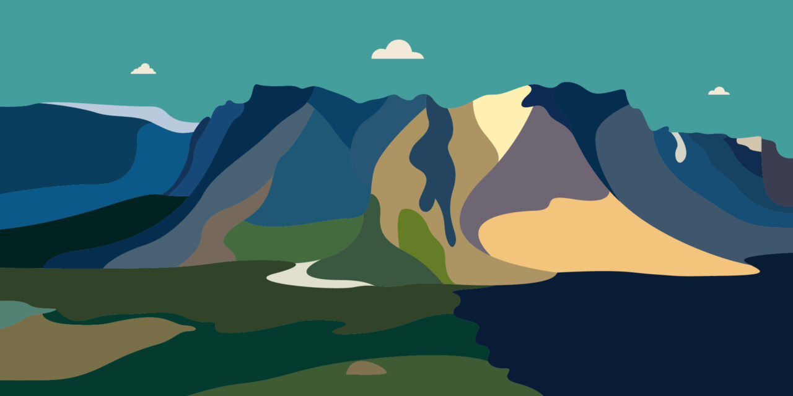
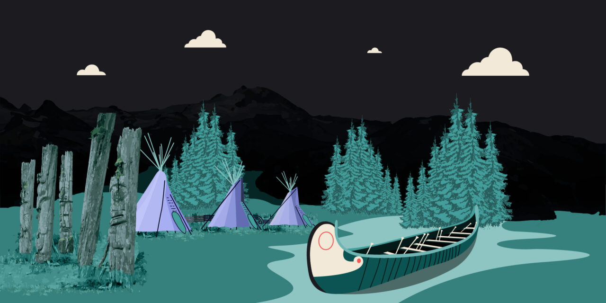

VIRTUAL REALITY FOR EDUCATION
exploring beautiful canada
O Canada… if we start talking about thee, there is no end to what we can say. Well, it’s not exactly the national anthem of Canada but it is still true enough. The country has a population of over 37.6 million people and is the beautifully snow-covered top to North American. No doubt that it is one of the world’s most beautiful countries; both in terms of natural beauty and culture. The landscape is hypnotically captivating, despite the cold in certain parts, but as it contains more than 9% of the world’s forest, you can imagine the amount of natural beauty the country holds. Not just that, there are a ton of factors that make Canada an amazing country. In this piece, which is not enough to cover everything, we will show you why Canada is one of the most preferred tourist destinations and a great place to explore,, in-person or virtually! So without further ado…
Fun facts about Canada
Here are a few facts about the beautiful and scenic country to get you all hyped for what’s to come in this piece:
- Canada is the world’s 2nd largest country (next only to Russia) and the largest in the western hemisphere, bordering only one country despite its enormous size.
- Canada is among the richest countries in the world with the highest standard of living and the lowest inflation rate of merely 2.3%.
- The economy is growing rapidly with an industrialized economy and unlimited opportunities for its citizens.
- One of the best things about Canada is its internationally acclaimed health-care system which is free for all its residents. Universal healthcare is a testimony to the fact the Government of Canada puts great emphasis on public health and considers it a basic human right.
- The country is one of the world’s most educated ones, as it spends more on its public education system than any other country.
- Canada has rich ethnic diversity and is one of the most multicultural countries in the world. Multiculturalism is a part of their national identity throughout each of the provinces and territories.
- Canadians are one of the humblest and politest people in the world. They are globally known for how nice they are and notorious for apologizing regularly.
Now that you are all prepped up, let’s get to the main course.
Canada & it's natural beauty
There are no single words to define the iconic natural beauty of Canada, but let’s take a start with how it has over ‘3 million lakes’. We already mentioned how it has 9% of the world’s total forests and has nature parks that are larger than some countries. Canada is also the most sparsely populated country in the world which means that nature exists in all its glory and wonder. And because of its natural beauty, Canada is considered as heaven for camping lovers. The Pacific Coast of British Columbia alone contains more than 16 ideal locations for campers as well as tourists to lose their sense of time. And if you move to the Prairie provinces of Canada including Manitoba, Saskatchewan, and Alberta, in the northern Great Plains region of North America, you will see how it is so easy for the tourists to fall in love with the wide-open sky. Then there is the Great Lakes region where camping is on the bucket list for nature lovers. The Arctic region constitutes 40% of Canada’s landmass, but stands alone and unique in all its natural beauty and magnificence.
The first people of canada
There are over 50+ distinct groups of Indigenous people with unique histories, languages, and cultural practices as well as spiritual beliefs, but they are mostly classified into three main groups, naming:
- Inuit
- Metis
- First Nations
First Nations people are the original inhabitants of the land that we now call Canada. The Inuit primarily inhabit the northern regions with their homeland known as Inuit Nunangat. The Metis have a unique culture coming from their mixed Indigenous and European ancestry.
Countless North American Indigenous words, inventions and games have become an everyday part of Canadian language and use. Some of the words include:
- barbecue;
- caribou;
- chipmunk;
- woodchuck;
- hammock;
- skunk; and,
- moose.
The canoe, snowshoes, the toboggan, lacrosse, tug of war, maple syrup and tobacco are just a few of the products, inventions, and games that were given to us by the Indigenous people of Canada.
The modern charm of canada
With many attractive locations and points of interest for tourists such as the Rocky Mountains, Whistler, Vancouver Island and many others, no one’s going to stay indoors, which is why the fabulous outdoor activities are at the centre of the Canadian tourism industry. As the country is still largely uninhabited, there is tons of room for not just locals, but tourists as well. There is no limit to what you can do to make your time worth remembering, this includes:
- snowboarding and skiing;
- fishing;
- golfing;
- mountain biking;
- kayaking;
- mountain climbing; and,
- canoeing.
Along with that, there are a ton of celebrations throughout the year, and if you happen to catch one, it will change your perception of partying altogether. Canadians aren’t just hospitable, but they know how to celebrate life. Some of the amazing events and festivals they host each year include:
- The Celebration of Light is held in Vancouver and is the world’s largest fireworks competition.
- Canadian Tulip Festival which is held in Ottawa.
- Calgary Stampede, which, you guessed it, happens in Calgary and is one of the largest Stampedes in the world. It consists of six events including tie-down roping, bull riding, steer wrestling, ladies barrel racing, saddle bronc and a rodeo.
- The Winter Carnival Festival of Quebec held in Quebec City is a fun event for people of all ages and attracts thousands of tourists from around the world with numerous activities such as night parades, shows, snow sculpting, skating, and much more.
- Edmonton Folk Music Festival is held in Edmonton, Alberta.
- Toronto International Film Festival; no introduction needed.
- The Celtic Colours International Festival is held in Nova Scotia to celebrate the traditional culture of Cape Breton Island.
The tourist attractions of canada
When it comes to attractions, Canada has tons which is why it had over 22.1 million tourists in 2019. Some of the top natural attractions in Canada that bring in tons of tourists include:
- Niagara Falls, Ontario;
- Banff, Alberta;
- Bear Rock Sinkhole, Northwest Territories;
- Iceberg Alley, Newfoundland & Labrador;
- Fundy National Park, New Brunswick;
- Dinosaur Provincial Park, Alberta; and,
- Northern Lights, Yellowknife, Northwest Territories.
Besides the above mentioned natural attractions, there are many other man-made attractions and places that attract thousands of tourists from around the globe. These attractions are globally acclaimed hotspots for tourists and include famous locations such as:
- Vancouver’s Stanley Park;
- Old Quebec;
- Toronto’s CN Tower;
- Halifax Citadel National Historic Site;
- Old Montreal;
- Victoria’s Inner Harbour; and,
- Ottawa’s Parliament Hill.
There is no denying that Canada is truly a blessing on this planet, and what it’s worth for tourists is entirely something else. So if you too are planning a visit or want to virtually explore a new destination, Canada is a great choice. Don’t let the coronavirus stop you from exploring this beautiful country from the comfort of your own home!